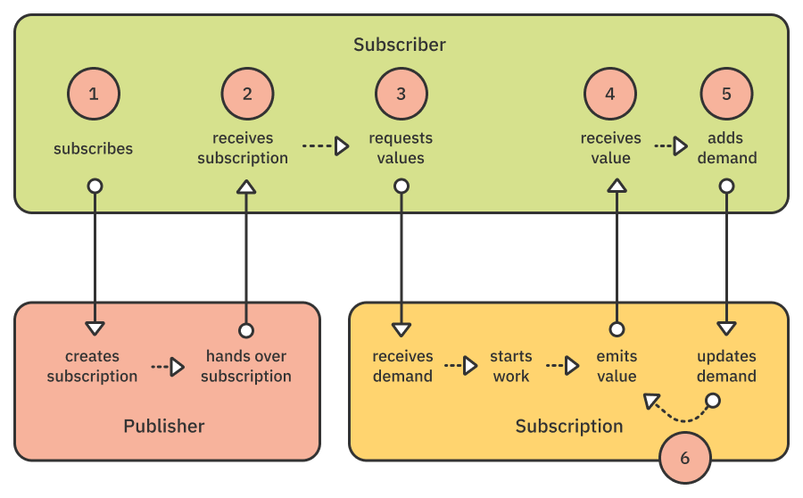

第18章：定制发布者和处理背压¶
在您学习Combine的旅程的这个时候，您可能会觉得框架中缺少许多运算符。如果您有其他被动框架的经验，情况可能尤其如此，这些框架通常提供丰富的内置和第三方操作符生态系统。Combine允许您创建自己的发布者。这个过程一开始可能令人难以置信，但请放心，它完全触手可及！本章将向您展示如何操作。
您将在本章中学习的第二个相关主题是背压管理。这需要一些解释：这是什么背压的东西？这是靠在椅子上太多，仔细检查组合代码引起的某种背痛吗？您将了解什么是背压，以及如何创建处理它的发布者。
创建自己的发布者¶
实施您自己的发布者的复杂性从“简单”到“相当复杂”不等。对于您实现的每个操作符，您将找到最简单的实现形式来实现您的目标。在这一章中，您将了解制作自己的发布者的三种不同方式：
- 在
Publisher命名空间中使用简单的扩展方法。 - 使用生成值的
Subscription``Publishers命名空间中实现类型。 - 与上面相同，但订阅可以转换上游发布者的值。
Note
从技术上讲，在没有自定义订阅的情况下创建自定义发布者是可能的。如果您这样做，您将失去应对订阅者需求的能力，这使您的发布者在Combine生态系统中是非法的。提前取消也可能成为一个问题。这不是推荐的方法，本章将教你如何以正确的方式编写发布者。
发布者作为扩展方法¶
您的首要任务是仅通过重用现有运算符来实现一个简单的运算符。这是你能得到的尽可能简单。
为此，您将添加一个新的unwrap()运算符，该运算符解开可选值并忽略其nil值。这将是一个非常简单的练习，因为您可以重用现有的compactMap(_:)运算符，尽管它需要您提供闭包。
使用新的unwrap()运算符将使您的代码更容易阅读，并且会使您正在做的事情非常清晰。读者甚至不需要查看关闭的内容。
您将像对所有其他操作符一样，在Publisher命名空间中添加操作符。
打开本章的入门Playground，该Playground可以在projects/Starter.playground中找到，然后从Project Navigator中打开其Unwrap运算符页面。
然后，添加以下代码：
extension Publisher {
// 1
func unwrap<T>() -> Publishers.CompactMap<Self, T> where Output == Optional<T> {
// 2
compactMap { $0 }
}
}
- 将自定义运算符写为方法的最复杂部分是签名。继续阅读以获取详细的描述。
- 实现是微不足道的：只需在
self身上使用compactMap(_:)！
方法签名可能令人难以置信。分解它，看看它是如何工作的：
func unwrap<T>()
您的第一步是使运算符通用，因为它的Output是上游发布者的可选类型包装的类型。
-> Publishers.CompactMap<Self, T>
该实现使用单个compactMap(_:)因此返回类型由此派生。如果您查看Publishers.CompactMap，您会看到它是一种通用类型：public struct CompactMap<Upstream, Output>。在实现自定义运算符时，Upstream是Self（您要扩展的发布者），Output是包装类型。
where Output == Optional<T> {
最后，您将操作符限制为Optional类型。您方便地编写它，将包装的类型T与方法的通用类型相匹配......等等！
Note
当开发更复杂的运算符作为方法时，例如使用一系列运算符时，签名可能会很快变得非常复杂。一个好的技术是让您的操作符返回AnyPublisher<OutputType, FailureType>。在方法中，您将返回以eraseToAnyPublisher()结尾的发布者来键入擦除签名。
测试您的自定义操作符¶
现在你可以测试你的新操作符了。在扩展名下方添加此代码：
let values: [Int?] = [1, 2, nil, 3, nil, 4]
values.publisher
.unwrap()
.sink {
print("Received value: \($0)")
}
运行Playground，不出所料，只有非零值打印到调试控制台：
Received value: 1
Received value: 2
Received value: 3
Received value: 4
现在您已经学会了制作简单的运算符方法，是时候深入研究更丰富、更复杂的发布者了。您可以像这样对发布者进行分组：
- 作为“制作人”并自己直接生产价值的发布者。
- 充当“变形金刚”的发布者，转换上游发布者产生的价值。
在本章中，您将学习如何同时使用两者，但首先您需要了解订阅发布者时会发生什么的详细信息。
订阅机制¶
订阅是Combine的无名英雄：虽然您到处都能看到发布者，但它们大多是无生命的实体。当您订阅发布者时，它会实例化负责接收订阅者的需求并生成事件（例如，值和完成）。
以下是订阅生命周期的详细信息：

- 订阅者订阅发布者。
- 发布者创建一个订阅，然后将其交给订阅者（调用
receive(subscription:)）。 - 订阅者通过向订阅发送其想要的值数量（调用订阅
request(_:)方法）来请求订阅的值。 - 订阅开始工作并开始发出价值。它逐一将它们发送给订阅者（调用订阅者的
receive(_:)方法）。 - 收到值后，订阅者将返回一个新的
Subscribers.Demand，这增加了之前的总需求。 - 订阅会不断发送值，直到发送的值数达到请求的总数。
如果订阅发送的值与订阅者请求的值一样多，它应该等待新的需求请求，然后再发送更多。您可以绕过此机制并继续发送值，但这违反了订阅者和订阅者之间的合同，并可能导致根据苹果的定义在发布者树中出现未定义的行为。
最后，如果出现错误或订阅的值源完成，订阅将调用订阅者的receive(completion:)方法。
散发价值的发布者¶
在第11章“Timers”中，您了解了Timer.publish()，但发现为计时器使用调度队列有点不安。为什么不根据Dispatch的DispatchSourceTimer开发自己的计时器呢？
您将这样做，在这样做时查看Subscription机制的详细信息。
要开始，请打开Playground的DispatchTimer发布者页面。
您将从定义配置结构开始，这将使订阅者与其订阅者之间轻松共享计时器配置。将此代码添加到Playground：
struct DispatchTimerConfiguration {
// 1
let queue: DispatchQueue?
// 2
let interval: DispatchTimeInterval
// 3
let leeway: DispatchTimeInterval
// 4
let times: Subscribers.Demand
}
如果您曾经使用过DispatchSourceTimer，那么其中一些属性应该看起来很熟悉：
- 您希望计时器能够在某个队列上点火，但如果您不在乎，您也希望使队列成为可选的。在这种情况下，计时器将在其选择的队列上点火。
- 计时器触发的间隔，从订阅时间开始。
- 回旋余地，即系统在截止日期后可能延迟交付计时器事件的最大时间。
- 您要接收的计时器事件数量。由于您正在制作自己的计时器，请使其灵活，并在完成之前交付数量有限的活动！
添加DispatchTimer发布者¶
您现在可以开始创建DispatchTimer发布者了。这将是直截了当的，因为所有工作都发生在订阅中！
在您的配置下方添加此代码：
extension Publishers {
struct DispatchTimer: Publisher {
// 5
typealias Output = DispatchTime
typealias Failure = Never
// 6
let configuration: DispatchTimerConfiguration
init(configuration: DispatchTimerConfiguration) {
self.configuration = configuration
}
}
}
- 您的计时器将当前时间作为
DispatchTime值发出。当然，它永远不会失败，所以发布者的Failure类型是Never。 - 保留给定配置的副本。您现在不使用它，但当您收到订阅者时，您将需要它。
Note
在编写代码时，您将开始看到编译器错误。请放心，在您完成实施要求之前，您将对这些进行补救。
现在，通过将此代码添加到初始化器下方的DispatchTimer定义中，实现Publisher协议所需的receive(subscriber:)方法：
// 7
func receive<S: Subscriber>(subscriber: S)
where Failure == S.Failure,
Output == S.Input {
// 8
let subscription = DispatchTimerSubscription(
subscriber: subscriber,
configuration: configuration
)
// 9
subscriber.receive(subscription: subscription)
}
- 该函数是通用的；它需要编译时专业化来匹配订阅者类型。
- 大部分操作将在不久后定义的
DispatchTimerSubscription中进行。 - 正如您在第2章“发布者和订阅者”中了解到的那样，订阅者会收到
Subscription，然后可以向订阅发送值请求。
发布者真的只有这么多！真正的工作将在订阅本身内进行。
建立您的订阅¶
订阅的作用是：
- 接受订阅者的初始要求。
- 按需生成计时器事件。
- 每次订阅者收到值并返回需求时，都会添加到需求计数中。
- 确保它提供的值不会超过配置中要求的值。
这听起来可能像很多代码，但没那么复杂！
开始在Publishers上的扩展下方定义订阅：
private final class DispatchTimerSubscription
<S: Subscriber>: Subscription where S.Input == DispatchTime {
}
签名本身提供了许多信息：
- 这个订阅在外部是不可见的，只能通过
Subscription协议，所以你把它设为private。 - 这是一个班级，因为你想通过参考来通过它。然后，订阅者可以将其添加到
Cancellable集合中，但也可以保留它并独立调用cancel()。 - 它迎合了
Input值类型为DispatchTime订阅者，这是该订阅发出的。
将所需属性添加到您的订阅中¶
现在将以下属性添加到订阅类的定义中：
// 10
let configuration: DispatchTimerConfiguration
// 11
var times: Subscribers.Demand
// 12
var requested: Subscribers.Demand = .none
// 13
var source: DispatchSourceTimer? = nil
// 14
var subscriber: S?
此代码包含：
- 订阅者通过的配置。
- 您从配置中复制的计时器触发的最大次数。您将把它用作每次发送值时都会递减的计数器。
- 当前需求；例如，订阅者请求的值数量——每次发送值时，您都会减少它。
- 将生成计时器事件的内部
DispatchSourceTimer。 - 订阅者。这清楚地表明，只要订阅没有完成、失败或取消，订阅就有责任保留订阅者。
Note
最后一点对于了解Combine中的所有权机制至关重要。订阅是订阅者和发布者之间的链接。它使订阅者（例如，持有闭包的对象，如AnySubscriber或sink）尽可能长时间地存在。这解释了为什么如果您不保留订阅，您的订阅者似乎永远不会收到价值：一旦订阅被释放，一切都会停止。当然，内部实现可能会根据您正在编码的发布者的细节而有所不同。
初始化和取消订阅¶
现在，将初始化器添加到DispatchTimerSubscription定义中：
init(subscriber: S,
configuration: DispatchTimerConfiguration) {
self.configuration = configuration
self.subscriber = subscriber
self.times = configuration.times
}
这非常简单。初始化器将times设置为发布者应接收计时器事件的最大次数，如配置指定。每当发布者发布事件时，这个反面都会下降。当它达到零时，计时器会完成一个finished的事件。
现在，实现cancel()，这是Subscription必须提供的必要方法：
func cancel() {
source = nil
subscriber = nil
}
将DispatchSourceTimer设置为nil足以阻止其运行。将subscriber属性设置为nil会将其从订阅的覆盖范围中释放出来。不要忘记在自己的订阅中这样做，以确保您不会在内存中保留不再需要的对象。
您现在可以开始对订阅的核心进行编码：request(_:)
让您的订阅请求值¶
你还记得你在第2章“发布者和订阅者”中学到的东西吗？一旦订阅者通过订阅发布者获得订阅，它必须从订阅中请求值。
这就是所有魔法发生的地方。要实现它，请将此方法添加到类中，在cancel方法之上：
// 15
func request(_ demand: Subscribers.Demand) {
// 16
guard times > .none else {
// 17
subscriber?.receive(completion: .finished)
return
}
}
- 此必需方法接收订阅者的需求。需求是累积的：它们加起来形成了订阅者请求的值总数。
- 您的第一个测试是验证您是否已经按照配置中的规定向订阅者发送了足够的值。也就是说，如果您发送了最大预期值数量，则与您的发布者收到的需求无关。
- 如果是这样的话，您可以通知订阅者发布者已完成发送值。
通过在guard语句后添加此代码来继续实现此方法：
// 18
requested += demand
// 19
if source == nil, requested > .none {
}
- 通过添加新需求来增加请求的值总数。
- 检查计时器是否已经存在。如果没有，并且存在请求的值，那么是时候开始它了。
配置计时器¶
if条件，请将此代码添加到最后一个的正文中：
// 20
let source = DispatchSource.makeTimerSource(queue: configuration.queue)
// 21
source.schedule(deadline: .now() + configuration.interval,
repeating: configuration.interval,
leeway: configuration.leeway)
- 从您配置的队列创建
DispatchSourceTimer。 - 安排计时器在每
configuration.interval秒后触发。
一旦计时器启动，即使您不使用它向订阅者发射事件，您也永远不会停止它。它将一直运行，直到订阅者取消订阅——或者您释放订阅。
您现在可以对计时器的核心进行编码，计时器会向订阅者发出事件。仍在if正文中，添加以下代码：
// 22
source.setEventHandler { [weak self] in
// 23
guard let self = self,
self.requested > .none else { return }
// 24
self.requested -= .max(1)
self.times -= .max(1)
// 25
_ = self.subscriber?.receive(.now())
// 26
if self.times == .none {
self.subscriber?.receive(completion: .finished)
}
}
- 为您的计时器设置事件处理程序。这是一个简单的关闭，计时器每次点火都会调用。确保对
self的引用weak住，否则订阅永远不会被释放。 - 验证是否有当前请求的值——发布者可能会在没有当前需求的情况下暂停，正如您将在本章后面了解背压时看到的那样。
- 现在您将发出一个值，减少两个计数器。
- 向订阅者发送一个值。
- 如果要发送的值总数符合配置指定的最大值，您可以认为发布者已完成并发出完成事件！
激活您的计时器¶
现在您已经配置了源计时器，请存储对它的引用，并通过在setEventHandler之后添加此代码来激活它：
self.source = source
source.activate()
这需要很多步骤，一路上很容易无意中错放了一些代码。此代码应该清除了Playground中的所有错误。如果没有，您可以通过查看上述步骤或将代码与projects/Final.playground中Playground的完成版本进行比较来仔细检查您的工作。
最后一步：在DispatchTimerSubscription的整个定义后添加此扩展，以定义一个易于链接此发布者的运算符：
extension Publishers {
static func timer(queue: DispatchQueue? = nil,
interval: DispatchTimeInterval,
leeway: DispatchTimeInterval = .nanoseconds(0),
times: Subscribers.Demand = .unlimited)
-> Publishers.DispatchTimer {
return Publishers.DispatchTimer(
configuration: .init(queue: queue,
interval: interval,
leeway: leeway,
times: times)
)
}
}
测试您的计时器¶
您现在已准备好测试您的新计时器！
interval外，新timer运算符的大多数参数都有一个默认值，以便在常见用例中更容易使用。这些默认值创建一个永不停止的计时器，回旋余地最小，并且不指定要在哪个队列上发出值。
在扩展名后添加此代码以测试您的计时器：
// 27
var logger = TimeLogger(sinceOrigin: true)
// 28
let publisher = Publishers.timer(interval: .seconds(1),
times: .max(6))
// 29
let subscription = publisher.sink { time in
print("Timer emits: \(time)", to: &logger)
}
- 这个
Playground定义了一个类TimeLogger，它与您在第10章“调试”中学会创建的课程非常相似。唯一的区别是，这个可以显示两个连续值之间的时差，也可以显示自创建计时器以来经过的时间。在这里，您想要显示您开始记录的时间。 - 您的计时器发布者将精确地发射六次，每秒一次。
- 记录您通过
TimeLogger收到的每个值。
运行Playground，你会看到这个不错的输出——或类似的东西，因为时间会略有不同：
+1.02668s: Timer emits: DispatchTime(rawValue: 183177446790083)
+2.02508s: Timer emits: DispatchTime(rawValue: 183178445856469)
+3.02603s: Timer emits: DispatchTime(rawValue: 183179446800230)
+4.02509s: Timer emits: DispatchTime(rawValue: 183180445857620)
+5.02613s: Timer emits: DispatchTime(rawValue: 183181446885030)
+6.02617s: Timer emits: DispatchTime(rawValue: 183182446908654)
设置时有轻微的偏移量——Playground也可能有一些额外的延迟——然后计时器每秒发射一次，六次。
您还可以测试取消计时器，例如，几秒钟后。添加此代码以执行此操作：
DispatchQueue.main.asyncAfter(deadline: .now() + 3.5) {
subscription.cancel()
}
再次运行Playground。这一次，你只看到三个值。看起来你的计时器工作正常！
虽然它在Combine API中几乎看不到，但正如您刚刚发现的那样，Subscription可以完成大部分工作。
享受你的成功。接下来你又要深入潜水了！
发布者改变价值观¶
你在培养组合技能方面取得了重大进展！您现在可以开发自己的操作符，即使是相当复杂的操作符。接下来要学习的是如何创建订阅，从上游发布者转换值。这是完全控制发布者订阅二人组的关键。
在第9章“网络”中，您了解了共享订阅有多有用。当底层发布者正在执行重要工作时，例如从网络请求数据，您希望与多个订阅者共享结果。但是，您希望避免多次发出相同的请求来检索相同的数据。
如果您不需要再次执行这项工作，则向未来的订阅者重播结果也是有益的。
为什么不尝试实现shareReplay()，它完全可以满足您的需求？这将是一项有趣的任务！要编写此运算符，您将创建一个执行以下操作的发布者：
- 在第一个订阅者时订阅上游发布者。
- 将最后的
N值重播给每个新订阅者。 - 如果事先发出完成事件，则中继完成事件。
请注意，这实施起来远非微不足道，但你肯定做到了！您将一步一步地使用它，到最后，您将有一个shareReplay()，您可以在未来的组合驱动项目中使用。
打开Playground中的ShareReplay操作符页面开始。
实现ShareReplay运算符¶
要实现shareReplay()，您需要：
- 符合
Subscription协议的类型。这是每个订阅者将收到的订阅。为了确保您能够满足每个订阅者的需求和取消，每个订阅者都将获得单独的订阅。 - 符合
Publisher协议的类型。您将作为一个类实现它，因为所有订阅者都希望共享相同的实例。
首先添加此代码来创建您的订阅类：
// 1
fileprivate final class ShareReplaySubscription<Output, Failure: Error>: Subscription {
// 2
let capacity: Int
// 3
var subscriber: AnySubscriber<Output,Failure>? = nil
// 4
var demand: Subscribers.Demand = .none
// 5
var buffer: [Output]
// 6
var completion: Subscribers.Completion<Failure>? = nil
}
从顶部：
- 您使用泛型
class而不是struct来实现订阅：Publisher和Subscriber都需要访问和突变订阅。 - 重播缓冲区的最大容量将是您在初始化期间设置的常量。
- 在订阅期间保留对订阅者的引用。使用类型擦除的
AnySubscriber可以让您免于与类型系统作斗争。:] - 跟踪发布者从订阅者那里收到的累积需求，以便您可以准确交付请求的值数量。
- 将挂起的值存储在缓冲区中，直到它们交付给订阅者或被扔掉。
- 这保持了潜在的完成事件，以便一旦新订阅者开始请求值，它就可以交付给新订阅者。
Note
如果您认为没有必要在立即交付完成事件时保留它，请放心，情况并非如此。订阅者应该首先收到订阅，然后在准备好接受值后立即收到完成事件（如果之前发出）。第一个request(_:)它发出了这个信号。发布者不知道此请求何时发生，因此它只是将完成工作交给订阅，以便在正确的时间交付。
初始化您的订阅¶
接下来，将初始化器添加到订阅定义中：
init<S>(subscriber: S,
replay: [Output],
capacity: Int,
completion: Subscribers.Completion<Failure>?)
where S: Subscriber,
Failure == S.Failure,
Output == S.Input {
// 7
self.subscriber = AnySubscriber(subscriber)
// 8
self.buffer = replay
self.capacity = capacity
self.completion = completion
}
此初始化器从上游发布者接收多个值，并将其设置在此订阅实例上。具体来说，它：
- 存储订阅者的类型擦除版本。
- 存储上游发布者的当前缓冲区、最大容量和完成事件（如果发出）。
向订阅者发送完成事件和未完成的值¶
您需要一种将完成事件转发给订阅者的方法。在订阅类中添加以下内容以满足该需求：
private func complete(with completion: Subscribers.Completion<Failure>) {
// 9
guard let subscriber = subscriber else { return }
self.subscriber = nil
// 10
self.completion = nil
self.buffer.removeAll()
// 11
subscriber.receive(completion: completion)
}
这种私有方法可以做到以下几点：
- 在方法期间保持订阅者，但在类中将其设置为
nil。这种防御措施确保订阅者在完成后可能错误拨打的任何电话都将被忽略。 - 确保完成仅发送一次，也将其设置为
nil，然后清空缓冲区。 - 将完成事件转发给订阅者。
您还需要一种可以向订阅者发出未偿值的方法。添加此方法以根据需要发出值：
private func emitAsNeeded() {
guard let subscriber = subscriber else { return }
// 12
while self.demand > .none && !buffer.isEmpty {
// 13
self.demand -= .max(1)
// 14
let nextDemand = subscriber.receive(buffer.removeFirst())
// 15
if nextDemand != .none {
self.demand += nextDemand
}
}
// 16
if let completion = completion {
complete(with: completion)
}
}
首先，这种方法确保有一个订阅者。如果有，该方法将：
- 只有当缓冲区中有一些值并且有未完成的需求时，才会发出值。
- 将未偿需求减少一个。
- 将第一个未偿价值发送给订阅者，并收到新的回报。
- 将新需求添加到未完成的总需求中，但前提是它不是
.none。否则，您将崩溃，因为Combine不会将Subscribers.Demand.none视为零，而添加或减去.none将触发异常。 - 如果完成事件处于待定状态，请立即发送。
事情正在形成！现在，实现Subscription的最重要的要求：
func request(_ demand: Subscribers.Demand) {
if demand != .none {
self.demand += demand
}
emitAsNeeded()
}
那很容易。请记住检查.none以避免崩溃——并密切关注未来版本的Combine修复此问题，然后继续发出。
Note
调用 emitAsNeeded() 即使请求是 .none 也能保证你正确地传递一个已经发生的完成事件。
取消您的订阅¶
取消订阅就更简单了。添加以下代码：
func cancel() {
complete(with: .finished)
}
与订阅者一样，您需要同时实现接受值和完成事件的方法。首先添加以下方法来接受值：
func receive(_ input: Output) {
guard subscriber != nil else { return }
// 17
buffer.append(input)
if buffer.count > capacity {
// 18
buffer.removeFirst()
}
// 19
emitAsNeeded()
}
确保有订阅者后，此方法将：
- 将值添加到未完成的缓冲区。您可以针对大多数常见情况进行优化，例如无限需求，但目前这将完美地完成这项工作。
- 确保缓冲值不超过请求的容量。您以滚动、先进先出的方式处理这个问题——当已经满的缓冲区接收每个新值时，当前的第一个值将被删除。
- 将结果交付给订阅者。
总结您的订阅¶
现在，添加以下方法来接受完成事件，您的订阅类将完成：
func receive(completion: Subscribers.Completion<Failure>) {
guard let subscriber = subscriber else { return }
self.subscriber = nil
self.buffer.removeAll()
subscriber.receive(completion: completion)
}
此方法删除订阅者，清空缓冲区——因为这只是良好的内存管理——并将完成发送到下游。
您已完成订阅！这不是很有趣吗？现在，是时候给发布者编码了。
为您的发布者编码¶
发布者通常是Publishers命名空间中的值类型（struct）。有时，将发布者实现为类是有意义的，如Publishers.Multicast（返回multicast()或Publishers.Share哪个share()返回。对于这个发布者，你需要一个类，类似于share()。然而，这是该规则的例外，因为大多数情况下，您会使用struct。
首先添加此代码，以便在订阅后定义您的发布者类：
extension Publishers {
// 20
final class ShareReplay<Upstream: Publisher>: Publisher {
// 21
typealias Output = Upstream.Output
typealias Failure = Upstream.Failure
}
}
- 您希望多个订阅者能够共享此运算符的单个实例，因此您使用一个
class而不是一个struct。它也是通用的，以上游发布者的最终类型为参数。 - 这个新发布者不会更改上游发布者的输出或失败类型——它只是使用上游的类型。
添加发布者所需的属性¶
现在，将发布者所需的属性添加到ShareReplay的定义中：
// 22
private let lock = NSRecursiveLock()
// 23
private let upstream: Upstream
// 24
private let capacity: Int
// 25
private var replay = [Output]()
// 26
private var subscriptions = [ShareReplaySubscription<Output, Failure>]()
// 27
private var completion: Subscribers.Completion<Failure>? = nil
此代码的作用：
- 因为您将同时为多个订阅者提供食物，因此您需要一个锁来保证对可变变量的独家访问。
- 保留对上游发布者的引用。您将需要在订阅生命周期的不同阶段使用它。
- 在初始化期间，您可以指定重播缓冲区的最大录制容量。
- 当然，您还需要存储您记录的值。
- 您为多个订阅者提供食物，因此您需要将他们留在身边，以通知他们事件。每个订阅者都从专用的
ShareReplaySubscription中获得其值——您将在短时间内对其进行编码。 - 即使在完成后，操作符也可以重播值，因此您需要记住上游发布者是否完成。
唷！从外观上看，还有一些代码需要编写！最后，你会发现没有那么多，但有家政工作要做，比如使用适当的锁定，这样你的操作符就可以在所有条件下都能顺利运行。
初始化值并将其转发给您的发布者¶
首先，将必要的初始化器添加到您的ShareReplay发布者中：
init(upstream: Upstream, capacity: Int) {
self.upstream = upstream
self.capacity = capacity
}
这里没什么花哨的，只是存储上游发布者和容量。接下来，您将添加几种方法来帮助将代码拆分为更小的块。
添加将传入值从上游中继到订阅者的方法：
private func relay(_ value: Output) {
// 28
lock.lock()
defer { lock.unlock() }
// 29
guard completion == nil else { return }
// 30
replay.append(value)
if replay.count > capacity {
replay.removeFirst()
}
// 31
subscriptions.forEach {
$0.receive(value)
}
}
此代码执行以下操作：
- 由于多个订阅者共享此发布者，您必须使用锁保护对可变变量的访问。在这里并不严格要求使用
defer，但这是很好的实践，以防您稍后修改方法，添加早期return语句并忘记解锁锁。 - 仅在上游尚未完成的情况下中继值。
- 将值添加到滚动缓冲区，并且仅保留最新的
capacity值。这些是要重播给新订阅者的。 - 将缓冲值中继到每个连接的订阅者。
完成后让您的发布者知道¶
其次，添加此方法来处理完成事件：
private func complete(_ completion: Subscribers.Completion<Failure>) {
lock.lock()
defer { lock.unlock() }
// 32
self.completion = completion
// 33
subscriptions.forEach {
$0.receive(completion: completion)
}
}
使用此代码，您将：
- 为未来的订阅者保存完成事件。
- 将其转发给每个连接的订阅者。
您现在可以开始对每个发布者必须实现的接收方法进行编码。此方法将接收订阅者。它的职责是创建一个新的订阅，然后将其移交给订阅者。
添加此代码以开始定义此方法：
func receive<S: Subscriber>(subscriber: S)
where Failure == S.Failure,
Output == S.Input {
lock.lock()
defer { lock.unlock() }
}
此receive(subscriber:)的标准原型指定订阅者，无论它是什么，都必须具有与发布者的Output和Failure类型相匹配的Input和Failure类型。还记得第2章“发布者和订阅者”中的这个吗？
创建订阅¶
接下来，将此代码添加到创建订阅的方法中，并将其移交给订阅者：
// 34
let subscription = ShareReplaySubscription(
subscriber: subscriber,
replay: replay,
capacity: capacity,
completion: completion)
// 35
subscriptions.append(subscription)
// 36
subscriber.receive(subscription: subscription)
- 新订阅引用订阅者，并接收当前的重播缓冲区、容量和任何未完成事件。
- 您保留订阅，以便将未来的事件传递给它。
- 您将订阅发送给订阅者，订阅者可能会立即或稍后开始请求值。
订阅上游发布者并处理其输入¶
您现在可以订阅上游发布者了。您只需要做一次：当您收到第一个订阅者时。
将此代码添加到receive(subscriber:)）-请注意，您故意不包含关闭}，因为还有更多代码需要添加：
// 37
guard subscriptions.count == 1 else { return }
let sink = AnySubscriber(
// 38
receiveSubscription: { subscription in
subscription.request(.unlimited)
},
// 39
receiveValue: { [weak self] (value: Output) -> Subscribers.Demand in
self?.relay(value)
return .none
},
// 40
receiveCompletion: { [weak self] in
self?.complete($0)
}
)
使用此代码，您：
- 只订阅一次上游发布者。
- 使用方便的
AnySubscriber类进行闭包，并在订阅时立即request.unlimited值，让发布者运行到完成。 - 将您收到的中继值转发给下游订阅者。
- 使用您从上游获得的完成事件来完成您的发布者。
Note
您最初可以请求.max(self.capacity)并接收，但请记住，Combine是需求驱动的！如果您不请求发布者能够制作的尽可能多的值，您可能永远不会获得完成事件！
为了避免保留周期，你只对self保持weak的引用。
你快完成了！现在，您只需要将AnySubscriber订阅到上游发布者。
通过添加以下代码来完成此方法的定义：
upstream.subscribe(sink)
再说一遍，现在应该清除了Playground中的所有错误。请记住，您可以通过在projects/final中将其与Playground的成品版本进行比较来仔细检查您的工作。
添加方便操作符¶
您的发布者已完成！当然，您还需要一件事：一个方便的操作符来帮助将这家新发布者与其他发布者连锁。
将其作为扩展添加到Playground末尾的Publishers命名空间中：
extension Publisher {
func shareReplay(capacity: Int = .max)
-> Publishers.ShareReplay<Self> {
return Publishers.ShareReplay(upstream: self,
capacity: capacity)
}
}
您现在有一个功能齐全的shareReplay(capacity:)运算符。这是很多代码，现在是时候尝试一下了！
测试您的订阅¶
将此代码添加到Playground末尾，以测试您的新操作符：
// 41
var logger = TimeLogger(sinceOrigin: true)
// 42
let subject = PassthroughSubject<Int,Never>()
// 43
let publisher = subject.shareReplay(capacity: 2)
// 44
subject.send(0)
以下是此代码的作用：
- 使用此
Playground中定义的方便的TimeLogger对象。 - 要模拟在不同时间发送值，您可以使用主题。
- 分享主题，并仅重播最后两个值。
- 通过主题发送初始值。没有订阅者连接到共享发布者，因此您不应该看到任何输出。
现在，创建您的第一个订阅并发送更多值：
let subscription1 = publisher.sink(
receiveCompletion: {
print("subscription1 completed: \($0)", to: &logger)
},
receiveValue: {
print("subscription1 received \($0)", to: &logger)
}
)
subject.send(1)
subject.send(2)
subject.send(3)
接下来，创建第二个订阅，再发送几个值，然后发送一个完成事件：
let subscription2 = publisher.sink(
receiveCompletion: {
print("subscription2 completed: \($0)", to: &logger)
},
receiveValue: {
print("subscription2 received \($0)", to: &logger)
}
)
subject.send(4)
subject.send(5)
subject.send(completion: .finished)
这两个订阅会显示他们收到的每个事件，以及自开始以来所花费的时间。
再添加一个略有延迟的订阅，以确保在发布者完成后发生：
var subscription3: Cancellable? = nil
DispatchQueue.main.asyncAfter(deadline: .now() + 1) {
print("Subscribing to shareReplay after upstream completed")
subscription3 = publisher.sink(
receiveCompletion: {
print("subscription3 completed: \($0)", to: &logger)
},
receiveValue: {
print("subscription3 received \($0)", to: &logger)
}
)
}
请记住，订阅在重新分配时终止，因此您需要使用变量来保留延迟的变量。一秒钟的延迟演示了发布者未来如何重播数据。你准备好测试了！运行Playground，在调试控制台中查看以下结果：
+0.02967s: subscription1 received 1
+0.03092s: subscription1 received 2
+0.03189s: subscription1 received 3
+0.03309s: subscription2 received 2
+0.03317s: subscription2 received 3
+0.03371s: subscription1 received 4
+0.03401s: subscription2 received 4
+0.03515s: subscription1 received 5
+0.03548s: subscription2 received 5
+0.03716s: subscription1 completed: finished
+0.03746s: subscription2 completed: finished
Subscribing to shareReplay after upstream completed
+1.12007s: subscription3 received 4
+1.12015s: subscription3 received 5
+1.12057s: subscription3 completed: finished
您的新操作符工作得很好：
0值从未出现在日志中，因为它是在第一个订阅者订阅共享发布者之前发出的。- 每个值都传播给当前和未来的订阅者。
- 在三个值通过主题后，您创建了
subscription2，因此它只看到最后两个（值2和3） - 在主题完成后，您创建了
subscription3，但订阅仍然收到主题发出的最后两个值。 - 即使订阅者是在共享发布者完成后完成的，完成事件也会正确传播。
验证您的订阅¶
太棒了！这完全按照你的需要工作。还是？您如何验证发布者是否只订阅过一次？当然，通过使用print(_:)运算符！您可以在shareReplay之前插入它来尝试一下。
找到以下代码：
let publisher = subject.shareReplay(capacity: 2)
并将其更改为：
let publisher = subject
.print("shareReplay")
.shareReplay(capacity: 2)
再次运行Playground，它将产生以下输出：
shareReplay: receive subscription: (PassthroughSubject)
shareReplay: request unlimited
shareReplay: receive value: (1)
+0.03004s: subscription1 received 1
shareReplay: receive value: (2)
+0.03146s: subscription1 received 2
shareReplay: receive value: (3)
+0.03239s: subscription1 received 3
+0.03364s: subscription2 received 2
+0.03374s: subscription2 received 3
shareReplay: receive value: (4)
+0.03439s: subscription1 received 4
+0.03471s: subscription2 received 4
shareReplay: receive value: (5)
+0.03577s: subscription1 received 5
+0.03609s: subscription2 received 5
shareReplay: receive finished
+0.03759s: subscription1 received completion: finished
+0.03788s: subscription2 received completion: finished
Subscribing to shareReplay after upstream completed
+1.11936s: subscription3 received 4
+1.11945s: subscription3 received 5
+1.11985s: subscription3 received completion: finished
以shareReplay开头的所有行都是显示原始主题发生情况的日志。现在，您确定它只执行一次工作，并与所有当前和未来的订阅者共享结果。干得非常好！
本章教你几种创建自己的发布者的技巧。它漫长而复杂，因为有很多代码需要编写。你现在快完成了，但在继续之前，你还有最后一个话题要学习。
处理背压¶
在流体动力学中，背压是反对流体通过管道所需流动的阻力或力。在Combine中，这是反对来自发布者的预期价值流的阻力。但这种阻力是什么？通常，这是订阅者需要处理发布者发出的价值的时间。一些例子是：
- 处理高频数据，如传感器的输入。
- 执行大型文件传输。
- 在数据更新时渲染复杂的用户界面。
- 等待用户输入。
- 更一般地说，处理订阅者无法以进入的速度跟上的传入数据。
Combine提供的发布者-订阅者机制是灵活的。这是一个拉力设计，而不是推力设计。这意味着订阅者要求发布者发出值，并指定他们想要接收多少值。此请求机制是自适应的：每次订阅者收到新值时，需求都会更新。这允许订阅者在不想收到更多数据时通过“关闭水龙头”来处理背压，并在他们准备好更多数据时“打开它”。
Note
请记住，您只能以添加的方式调整需求。每次订阅者收到新值时，您可以通过返回新的.max(N)或.unlimited增加需求。或者你可以返回.none，这表明需求不应该增加。然而，订阅者随后“挂钩”接收值，至少达到新的最大需求。例如，如果之前的最大需求是接收三个值，而订阅者只收到一个值，那么在订阅者的receive(_:)中返回.none不会“关闭点击”。当发布者准备发布时，订阅者仍然最多会收到两个值。
当更多值可用时会发生什么完全取决于您的设计。您可以：
- 通过管理需求来控制流程，以防止发布者发送超出您无法处理的值。
- 缓冲值，直到您可以处理它们——冒着耗尽可用内存的风险。
- 删除您无法立即处理的值。
- 根据您的要求，将上述内容结合在一起。
浏览所有可能的组合和实现可能需要几章。除上述内容外，处理背压可以采取以下形式：
- 具有自定义
Subscription处理拥塞的发布者。 - 在发布者链的末尾提供价值的订阅者。
在本背压管理入门中，您将专注于实施后者。您将创建一个可重复使用的sink功能变体，您已经非常了解该变体。
使用可暂停的sink来处理背压¶
要开始，请切换到Playground的PausableSink页面。
作为第一步，创建一个协议，允许您从暂停中恢复：
protocol Pausable {
var paused: Bool { get }
func resume()
}
您在这里不需要pause()方法，因为您将决定在收到每个值时是否暂停。当然，一个更复杂的可暂停订阅者可以随时调用pause()方法！目前，您将保持代码尽可能简单明了。
接下来，添加此代码以开始定义可平铺设的Subscriber：
// 1
final class PausableSubscriber<Input, Failure: Error>:
Subscriber, Pausable, Cancellable {
// 2
let combineIdentifier = CombineIdentifier()
}
- 您的可暂停订阅者既是可
Pausable，也是可Cancellable。这是您的pausableSink函数将返回的对象。这也是为什么你把它作为一个类而不是一个结构实现的原因：你不希望复制一个对象，你需要在其生命周期的某些点上具有可变性。 - 订阅者必须为
Combine提供唯一的标识符，以管理和优化其发布者流。
现在添加以下附加属性：
// 3
let receiveValue: (Input) -> Bool
// 4
let receiveCompletion: (Subscribers.Completion<Failure>) -> Void
// 5
private var subscription: Subscription? = nil
// 6
var paused = false
receiveValue关闭返回一个Bool：true表示它可能会收到更多值，false表示订阅应该暂停。- 在收到发布者的完成事件后，将要求完成关闭。
- 保留订阅，以便它在暂停后请求更多值。当您不再需要此属性时，您需要将其设置为
nil，以避免保留周期。 - 您根据
Pausable协议公开paused的属性。
接下来，将以下代码添加到PausableSubscriber中，以实现初始化器并符合Cancellable协议：
// 7
init(receiveValue: @escaping (Input) -> Bool,
receiveCompletion: @escaping (Subscribers.Completion<Failure>) -> Void) {
self.receiveValue = receiveValue
self.receiveCompletion = receiveCompletion
}
// 8
func cancel() {
subscription?.cancel()
subscription = nil
}
- 初始化器接受两个闭包，订阅者将在收到发布者的新值和完成后调用这两个闭包。闭包与您与
sink函数一起使用的闭包一样，只有一个例外：receiveValue闭包返回一个布尔值，以指示接收器是否准备好接受更多值，或者您是否需要将订阅置于保留状态。 - 取消订阅时，不要忘记在之后将其设置为
nil，以避免保留周期。
现在添加此代码以满足Subscriber的要求：
func receive(subscription: Subscription) {
// 9
self.subscription = subscription
// 10
subscription.request(.max(1))
}
func receive(_ input: Input) -> Subscribers.Demand {
// 11
paused = receiveValue(input) == false
// 12
return paused ? .none : .max(1)
}
func receive(completion: Subscribers.Completion<Failure>) {
// 13
receiveCompletion(completion)
subscription = nil
}
- 收到发布者创建的订阅后，将其存储到以后，以便您能够从暂停中恢复。
- 立即请求一个值。您的订阅者是可以暂停的，您无法预测何时需要暂停。这里的策略是逐一请求值。
- 收到新值时，调用
receiveValue并相应地更新paused状态。 - 如果订阅者被暂停，返回
.none表示您现在不想要更多值——请记住，您最初只请求了一个值。否则，再请求一个值来保持循环。 - 收到完成事件后，将其转发给
receiveCompletion然后将订阅设置为nil，因为您不再需要它。
最后，实施Pausable的其余部分：
func resume() {
guard paused else { return }
paused = false
// 14
subscription?.request(.max(1))
}
- 如果发布者被“暂停”，请请求一个值重新开始循环。
就像您对以前的发布者所做的那样，您现在可以在Publishers命名空间中公开新的可平铺水槽。
在Playground的末尾添加此代码：
extension Publisher {
// 15
func pausableSink(
receiveCompletion: @escaping ((Subscribers.Completion<Failure>) -> Void),
receiveValue: @escaping ((Output) -> Bool))
-> Pausable & Cancellable {
// 16
let pausable = PausableSubscriber(
receiveValue: receiveValue,
receiveCompletion: receiveCompletion)
self.subscribe(pausable)
// 17
return pausable
}
}
- 您的
pausableSink操作符与sink操作符非常接近。唯一的区别是receiveValue闭包的返回类型：Bool。 - 实例化一个新的
PausableSubscriber，并将其订阅self，发布者。 - 订阅者是您将用于恢复和取消订阅的对象。
测试你的新sink¶
你现在可以试试你的新sink了！为了简单起到手，请模拟发布者应该停止发送值的情况。添加以下代码：
let subscription = [1, 2, 3, 4, 5, 6]
.publisher
.pausableSink(receiveCompletion: { completion in
print("Pausable subscription completed: \(completion)")
}) { value -> Bool in
print("Receive value: \(value)")
if value % 2 == 1 {
print("Pausing")
return false
}
return true
}
数组的发布者通常会按顺序发出其所有值，一个接一个地发出。使用您的可暂停sink，当收到值1、3和5时，此发布者将暂停。
运行Playground，您将看到：
Receive value: 1
Pausing
要恢复发布者，您需要异步调用resume()。这很容易用计时器完成。添加此代码以设置计时器：
let timer = Timer.publish(every: 1, on: .main, in: .common)
.autoconnect()
.sink { _ in
guard subscription.paused else { return }
print("Subscription is paused, resuming")
subscription.resume()
}
再次运行Playground，您将看到暂停/恢复机制正在运行：
Receive value: 1
Pausing
Subscription is paused, resuming
Receive value: 2
Receive value: 3
Pausing
Subscription is paused, resuming
Receive value: 4
Receive value: 5
Pausing
Subscription is paused, resuming
Receive value: 6
Pausable subscription completed: finished
恭喜！您现在有了一个功能性的可暂停接收器，并且您已经了解了如何处理代码中的背压！
Note
如果您的发布者无法保存值并等待订阅者请求它们，该怎么办？在这种情况下，您希望使用buffer(size:prefetch:whenFull:)运算符缓冲值。此运算符可以缓冲值，最大值在size参数中指示，并在订阅者准备好接收它们时交付它们。其他参数决定了缓冲区如何填充——无论是在订阅时立即填充，还是应订阅者的请求——以及缓冲区已满时会发生什么——即删除它收到的最后一个值，删除最古老的值或以错误终止。
关键点¶
哇，这是一个漫长而复杂的章节！您学到了很多关于发布者的知识：
- 发布者可以是一种简单的方法，可以利用其他发布者来方便。
- 编写自定义发布者通常涉及创建随附的
Subscription。 Subscription是Subscriber``Publisher之间的真正链接。- 在大多数情况下，
Subscription是完成所有工作的订阅。 Subscriber可以通过调整其Demand来控制价值的交付。Subscription负责尊重订阅者Demand。Combine不会执行它，但作为Combine生态系统的好公民，你绝对应该尊重它。
从这里去哪里？¶
您了解了发布者的内部运作方式，以及如何设置机器来编写自己的机器。当然，您编写的任何代码——特别是发布者！——都应该经过彻底的测试。转到下一章，了解有关测试Combine代码的所有信息！